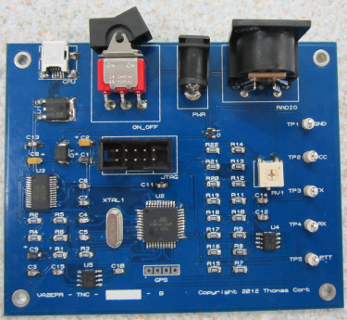

|
Introduction

Greetings and Salutations!
My name is Thomas Cort.
I live in Gatineau,
Quebec,
Canada with my wife
Bridget. I am currently a student in the
Electronics Technology
program at Heritage College.
I'm in the final year of my studies, and I created this
website to share my final year project with the world.
The project incorporates one of my favourite hobbies,
Amateur Radio.
The goal is to design and build a
Terminal Node Controller.
Additionally, I'm going to be making a portable version with an integrated
GPS receiver.
The target application of the portable version is
APRS tracking.
If you would like to contact me, my e-mail address is
va2epr@rac.ca.
Current Status
As you can see by the picture in the upper right, I've completed the
hardware aspect of the project; the printed circuit board I designed is populated
with parts. I'm spending most of my time these days working on the firmware.
I've got about a week or two of work left until I can start testing it as a KISS TNC.
Then I'll be working on APRS and the PC software. The projected date of completion is
the end of April 2013.
Documentation
Important documentation will be posted here. Currently,
I have posted a detailed project proposal document outlining the
scope of the project, the project goals, the preliminary design,
and an implementation plan. In the future, I will be
posting end of semester reports in this section as well
as a user manual.
Project Proposal (PDF)
Hardware
At the heart of the project is an Atmel ATMega1284p
microcontroller running at 14.7456MHz. Connected to it
are sub-circuits that interface with a radio, a
computer, and optionally a GPS. The computer interface
is USB (Mini B connector) using an FTDI FT232RL chip to
provide a virtual COM port in Windows which should
enable compatibility with existing KISS mode packet
software while providing the convenience of USB. The
radio is interfaced with a DIN5 connector, somewhat
common among TNCs, to send/receive audio signals and key
the radio. Power is provided via a 2.1mm barrel
connector. Below is the schematic, bill of materials,
and printed circuit board artwork.
Schematic (PDF)
Schematic CAD File (Proteus ISIS)
Bill of Materials (HTML)
PCB Layout CAD File (Proteus ARES)
Gerber Files (ZIP)
Firmware
The firmware is a work in progress, but it's nearly feature complete for
a KISS TNC. I will begin testing in the next week or two. So far I've written
about 2,000 lines of code. When the basics are working, I'll move on to adding
a simple APRS encoder and a micro implementation of AX.25 UI Frames.
Firmware Source Code
Software
There isn't much to the PC software at the moment. I've got the start of a console,
an interactive map, and a configuration form that doesn't do much at the moment. I will
be adding functionality to the skeleton code as the semester progresses.
Software Source Code
License
One of the goals of this project is to create a free and open terminal
node controller with associated software that respects your freedom. The
licenses were chosen accordingly.
Source code (i.e. software and firmware) is licensed
under the terms of the
GNU General Public License
as published by the
Free Software Foundation, either
version 3 of the License,
or (at your option) any later version.
Documentation (i.e. text documents, manuals, websites, etc) is
licensed under the terms of the
GNU Free Documentation License,
Version 1.3
or any later version published by the
Free Software Foundation.
Design files (i.e. schematic CAD files, PCB layout, etc)
are licensed under
the Creative Commons
Attribution-ShareAlike 3.0 Unported
(CC BY-SA 3.0) license.
Disclaimer
The project files are distributed in the hope that they will be useful,
but WITHOUT ANY WARRANTY; without even the implied warranty of
MERCHANTABILITY or FITNESS FOR A PARTICULAR PURPOSE.
Download
All source code, design files, and documentation is kept in a
git repository on
github.
https://github.com/tcort/va2epr-tnc
|